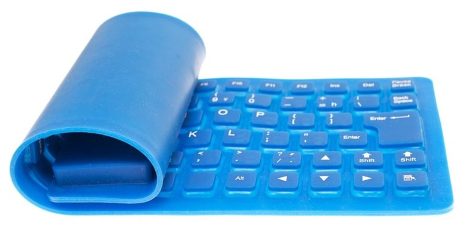
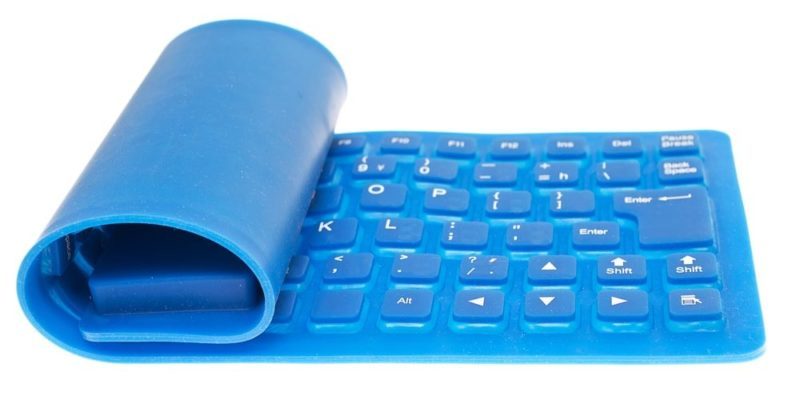

In
computer science and computing, the keyboard is a peripheral or input
or input device (input) of information. It consists of a set of keys or
buttons arranged horizontally on a sheet, where they act as mechanical
levers or electronic switches, thus allowing the user to enter
encrypted information into the computer system.
It operates in a
similar way to typewriters: each key is associated with a character, a
function or a set of characters, which, when pressed by the user's
fingers, enter a specific signal to the computer, tablet or Smartphone.
The keyboard is probably the main way the user communicates with the
computer system. It was also the first to
be devised, at least as far as modern computers are concerned.
Today
there are different computer keyboard configurations and different
models, depending on their ergonomic construction and internal logic.
Some of them have even incorporated the functions of other peripherals,
such as the mouse: not only do they come in different languages, but
they are also adapted to the Operating Systems and computer models that
exist on the market. |
 
